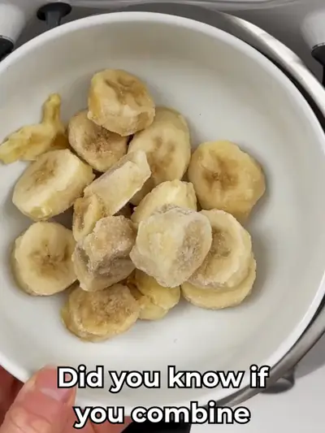

Craving pumpkin pie but want a healthier twist?

Ingredients
- banana
- pumpkin puree
- chia seeds
- milk
- maple syrup
- greek yogurt
- vanilla
Steps
- Did you know if you combine banana, pumpkin puree, chia seeds, almond milk, maple syrup, Greek yogurt, vanilla extract, and pumpkin spice, you'll have a healthy pumpkin smoothie with 5 grams of protein, 5 grams of fiber, and only 172 calories in under 5 minutes.
From the video's narration and on-screen text, by @pickyeaterblog on TikTok. Open original